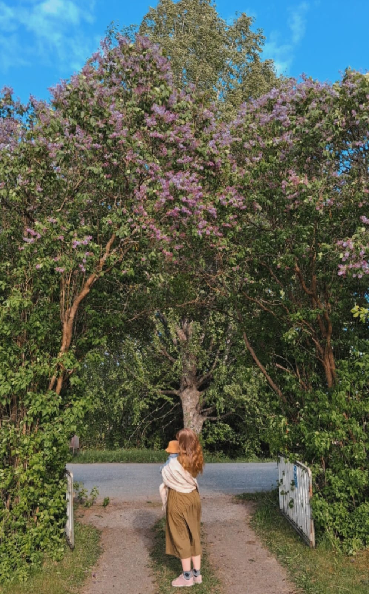

Tervetuloa
Kotoa käsin on kokoelma käsintehtyjä reseptejä – saippuoita, voiteita ja muita luonnonkosmetiikan pieniä ihmeitä sekä kotiruokaa, joka syntyy puutarhan ja lähimetsän antimista. Jokainen resepti on testattu omassa keittiössä ja tehty jaettavaksi.
Reseptejä ja tekemisen iloa
Valikoima suosikkeja kosmetiikan ja ruoan maailmasta
Ladataan reseptejä…
Uusi resepti joka kuulle
Liity postituslistalle ja saat tuoreimmat reseptit suoraan sähköpostiisi.